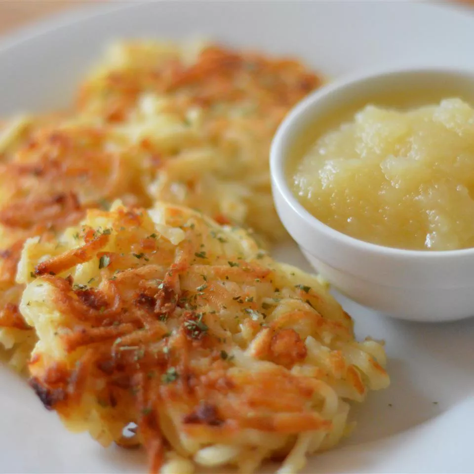

Mom's Potato Latkes

Description
Latkes (a.k.a. potato pancakes) are a crowd-pleasing addition to any table —
and this family recipe will impress even the pickiest eaters. The secret
ingredient? Saltine crackers! The pantry staple replaces all-purpose flour, binds
the latkes together, and contributes to the irresistible texture. Though they're
traditionally served during Hanukkah, you'll want to enjoy these wonderfully
crispy and savory latkes all year long.
Ingredients
- 3 cups shredded potato
- ¼ cup grated onion
- 6 saltine crackers, or as needed, crushed
- 2 large eggs, beaten
- ½ teaspoon salt, or more to taste
- ¼ teaspoon ground black pepper
- ½ cup vegetable oil, or as needed
Steps
- Combine potato, onion, crushed crackers, eggs, salt, and pepper together in a
large bowl.
- Heat 1/4 inch oil in a heavy skillet over medium-high heat.
- Drop spoonfuls of potato mixture, first pressing mixture against side of the bowl
to remove excess liquid, into hot oil; slightly flatten latkes with the back of a
spoon to make an even thickness.
- Cook in batches until browned and crisp, 3 to 5 minutes per side. Drain latkes on
a paper towel-lined plate.